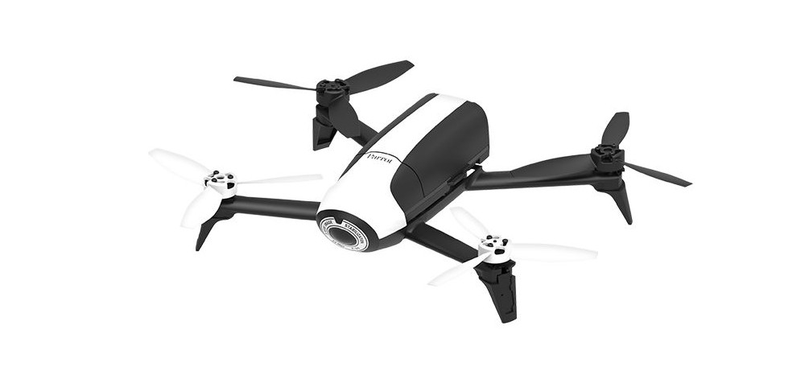
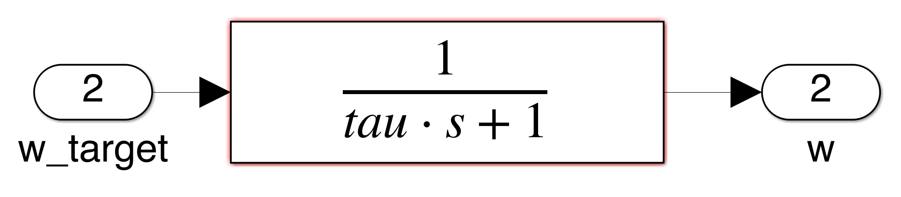
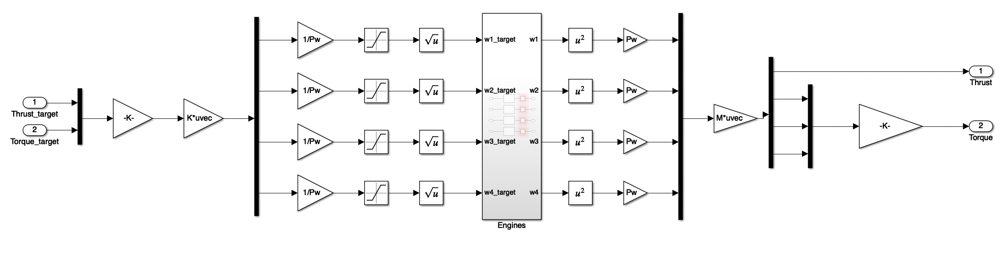

Personal Project
Modeling, Control and Simulation of a Quadcopter

Introduction
Modeling and simulating the behavior of a drone to design a complete GNC software requires to understand how a quadcopter works. Qualitatively speaking, a drone leans to forward or to move to the side. In order to do so, it has to reduce the rotational speed of the front propellers and increase the speed of the back propellers. Moreover, a quadcopter has two propellers that spin clockwise and the two others spin counter-clockwise. This way, the drone can spin while performing a stationnary flight by reducing the speed of two propellers and increasing the speed of the two others.Modeling
Mathematical/Physical modeling of the motion dynamics
Modeling of the electric motors
Since the only way to control the attitude and the motion of the drone is based on controlling the motors, we had to model the behavior of the electric motors. In order to do so, we modeled the motors with a first order transfer function and a saturation for the rotational speed of the propellers. We also had to model the force and the torque generated by each motor. In order to do so, we chose a widespread model expressed by the following formula: andDesign of the GNC software of the drone
 We have used cascaded controllers to control the attitude of drone and the speed and position of the drone.
We have used cascaded controllers to control the attitude of drone and the speed and position of the drone.
Control of the drone
As written previously, we have made the assumption that the electric motors were already controlled. This is why we have modeled the motors with a first order transfers function with the rotation speed as the input and as the output of the motors.  Using the formulas used to model the thrust create by each motor, we can compute the global thrust and the torque created. This is what we have done here:  Then, we have used a simple PD controller to control the attitude of the drone by generating adapted torque commands.Guidance of the drone
We have used similar PD controllers on the x and the y axis to control the position of the drone by generating adapted angle commands. On the z axis, we have used a PID controller to cancel the static-error inducing effect of gravity. This PID generates adapted thrust commands to reach or maintain an altitude.Autonomous navigation
Waypoints
After implementing our position controller, the following step was to make the drone follow a list of waypoints. In order to do so, we have used a state-flow chart in simulink to generate a trajectory to follow.